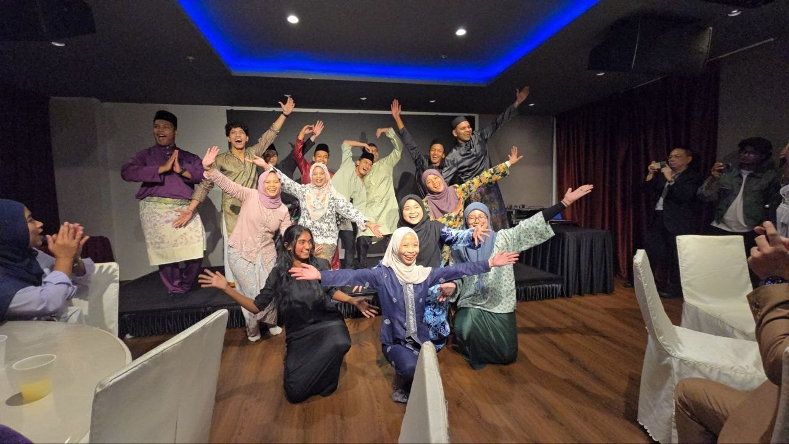
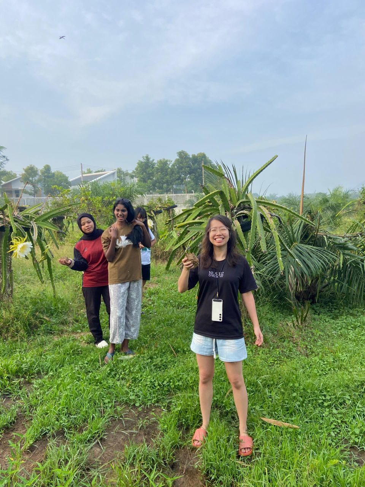
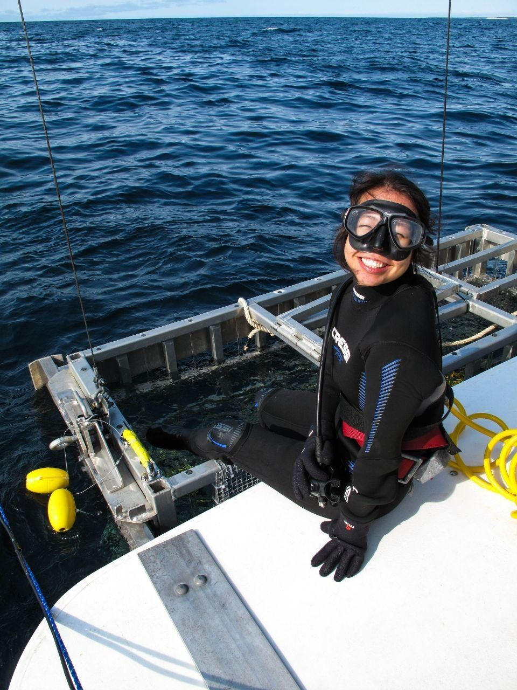
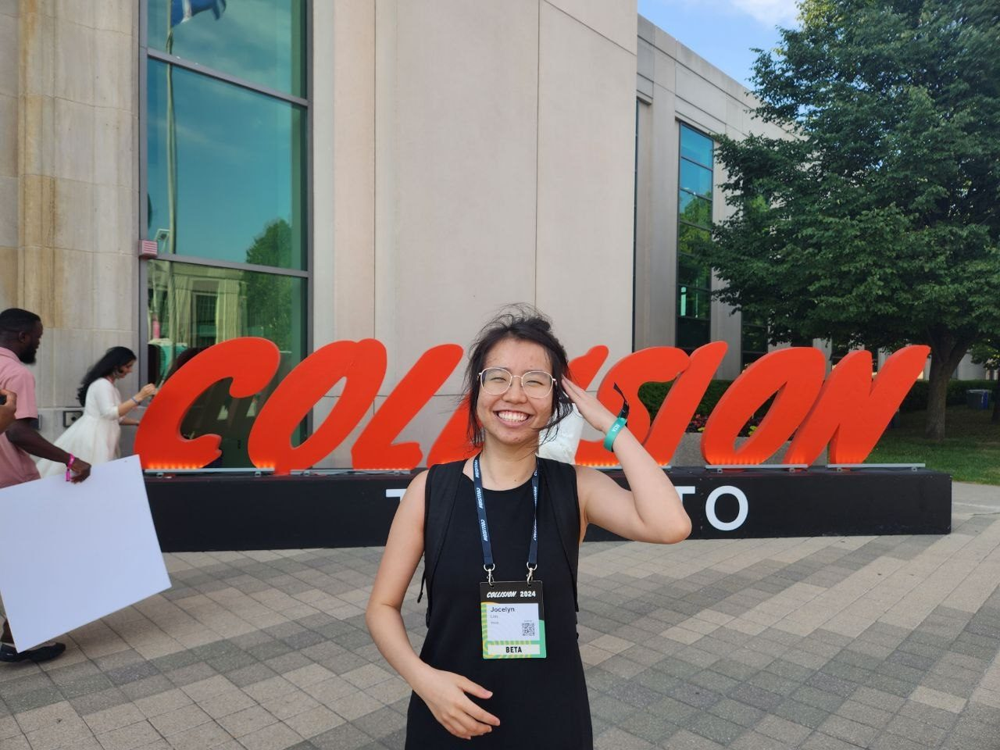
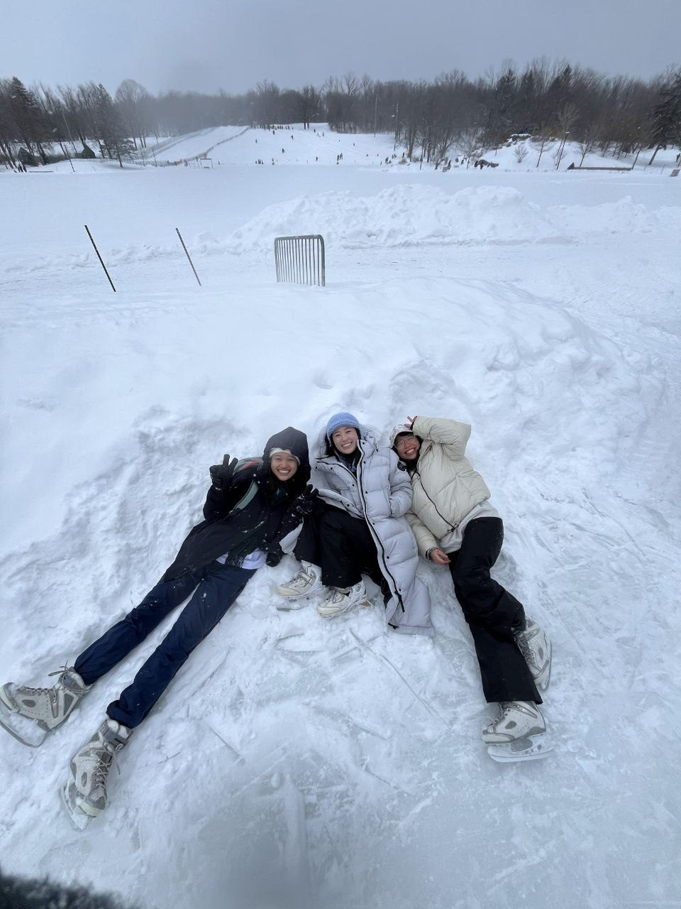

← back to everything

share the journey
Stories
Honest notes from the journey — the thinking behind the work.
Honest notes from the journey — the thinking behind the work.
I write to make sense of things. These are the honest notes behind the work — what startups actually taught me, why I enjoy solo-travelling so much, getting rejected a hundred times, and what it really feels like to graduate and start over. If you want to know how I think, this is the place to start.
A few I'm proud of are below. The rest live on Medium.
I came for the opportunity. I left with a story of resilience, growth, and the discovery of what I truly want.
A crash course in sales I didn't sign up for — and what it taught me more than any classroom ever did.
The freedom, fears, and unexpected clarity that come from travelling with no one but yourself.
Vulnerability: strength or weakness? Writing my way to an answer.





